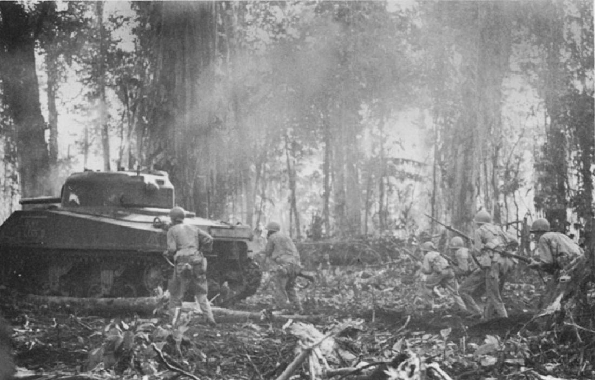
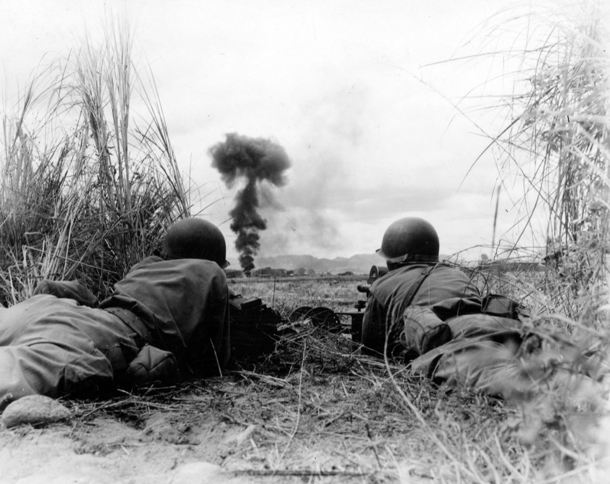
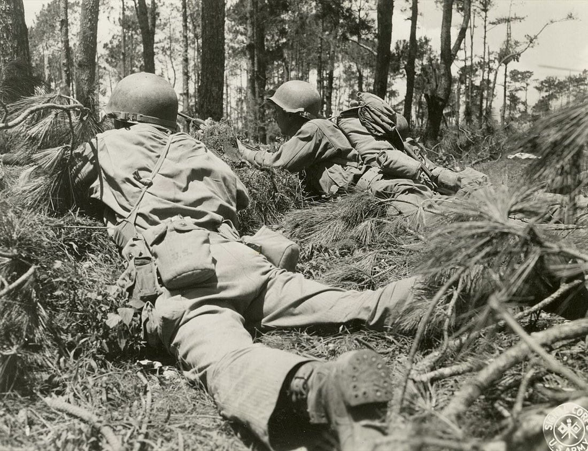

A college boy signs up
Jess was nineteen, a first-year student at Gila College in Thatcher, when he enlisted in the Army’s Enlisted Reserve. The reserve let college men finish the school year before they were called. Before he left he was given a patriarchal blessing that promised he would come home if he lived faithfully. He carried that promise through everything that followed.
In December of ’42 I enlisted in the Army Reserve so I could continue school. I stayed in that reserve till, I think it was April of ’43, and then they called us into active service.
The record
- National Archives enlistment file, Reserve Corps records: Rowley, Jesse V, serial number 19109459, born 1923 in Arizona, resident of Graham County. Enlisted at Phoenix on December 3, 1942 as a private. One year of college. Single.
- The same record carries a deferment date of June 1943. Jess remembered the call coming about April.
Trained for the desert
A little passenger train took the Gila Valley boys from Thatcher out to Bowie, where they boarded a Pullman troop train on the main line. He was sworn in at Fort MacArthur, on the harbor at San Pedro, then sent up the coast to Camp Roberts for infantry basic training. He was trained as a rifleman, for a war in the desert.
The rifle I trained with in Camp Roberts, I learned to love that rifle. I earned sharpshooter with it.
I’d been trained to go to the European theater to fight in the desert. So they sent me to the jungles down in the South Pacific, where you couldn’t see nothing.
After basic he came home to Thatcher on furlough. It was the last time he saw his father.
Thirty days on a ship
He sailed from San Francisco as a replacement, one of thousands of trained men sent out to fill the ranks of units already overseas. The ship took more than thirty days to reach New Caledonia, the Army’s great rear base in the South Pacific. He was never seasick. He read the New Testament on the way across.
It took us better than thirty days on a ship to go down through the ocean to New Caledonia. And by the way, I read the New Testament, from there to there.
- Distance
- about 6,300 miles
- At sea
- 30+ days
The record
- The ship’s name and sailing date are not known. His discharge paper, if the family has it, gives the exact date he left the United States.
Into the Illinois regiment
From New Caledonia he went up to Guadalcanal. The island had been won that February, but Japanese planes still came over at night. There he was assigned to Company H of the 129th Infantry, the heavy weapons company of the regiment’s 2nd Battalion. A man trained to carry a rifle was handed a carbine he had never fired and put on an 81 mm mortar.
I was trained as a rifleman, to carry a .30-06. Down here they issued me a little .30 carbine, going into heavy weapons, in the mortars. I didn’t know a thing about the gun and was going to the front line. I said, “Well, give me some boxes of shells. I’m going in the jungle to learn something about this gun.” And so I did.
The record
- The 129th was an Illinois National Guard regiment. It had been split from its own Illinois division, the 33rd, and on July 31, 1943 it was assigned to Ohio’s 37th “Buckeye” Division. That is why an Arizona boy served with Illinois men under the Ohio patch.
- The regiment sailed from Espiritu Santo and unloaded on Guadalcanal on the last day of October 1943, staging for Bougainville. That is the window in which Jess could have joined it there.
Memory and record
Jess understood that the 37th had “lost a complete regiment” in the Solomons fighting. The division was short a regiment, but not from battle. Its third regiment, the 147th Infantry, had been sent off on separate duty in 1942 and never came back. The 129th filled the gap. The 129th itself had not yet been in a battle, as Jess says elsewhere.The half circle
Bougainville is the largest of the Solomons, 125 miles of mountain and swamp with a smoking volcano, Mount Bagana, in view of the American lines. Some 40,000 Japanese held the far ends of the island. The Americans did not try to take it. They landed on the empty west coast, carved out a half circle of jungle big enough for three airfields, and dug in to hold it.
We made a half circle from the ocean around and back, enough for a bomber strip and two fighter strips, which the Seabees went to make. And we established a perimeter around to hold the Japanese off of it. They knew we were there and we knew they were over there.
It rained there every day on that island. You’d get soaking wet and crawl in your foxhole for the night. Next morning you’d be dried out in the heat.
He slept on the ground for two years. There was no bedroll: a poncho in the bottom of the hole and his shirt folded for a pillow. On Bougainville he felt his first earthquake.
The record
- The 129th landed at Empress Augusta Bay on November 13, 1943. By December 15 the perimeter line ran about 13 miles through the jungle. The 37th Division held the western half.
- Three airfields were built inside it: the Torokina fighter strip on the beach, and the Piva bomber and fighter strips inland. From them American planes shut down the great Japanese base at Rabaul.
How the beachhead filled
Men landed at Empress Augusta Bay, by convoy, November 1943
The 129th came in the fifth convoy: four attack transports and two cargo ships carrying 6,678 men and 2,935 tons of supplies. By that evening almost 34,000 Americans were ashore. Source: Marine Corps official history.
“Drop them on us”
In March 1944 the Japanese came for the airfields. They had dragged their artillery across the island in pieces and brought more than 15,000 men through the mountains. Three columns struck the perimeter. The last and longest fight fell on the center of the 37th Division’s line, where a single battalion of the 129th held the whole regimental front. It was Jess’s battalion. His mortars sat a few hundred yards behind its pillboxes.
They thought the 129th would be the one to take, because we had really never been in a front-end battle, and there’s a bunch of greenies in there. So they tried us.
We zeroed them in outside the machine gun pillboxes, to kill the Japanese outside of that. But when they overrun the machine guns, those guys in those foxholes said, “Raise those things up.” We said, “We’ll be dropping them right on you.” They said, “We’d rather have you guys kill us as these guys kill us. Drop them on us.” So we just cranked them up and started dropping them right on them.
They fired so fast that one mortar tube glowed red and bowed until it would not work. They ran out of shells twice and were rationed to a round now and then. A Japanese knee-mortar round landed in the ammunition pile ten feet from his gun. The stack did not go off. A fragment cut his leg, and he never reported it.
I didn’t go in for any Purple Heart, because I thought you really had to be wounded to get some kind of a medal.
The next day he ran a telephone line forward to the observer at the front while a sniper in a banyan tree chipped the dirt around him. Under fire his stomach turned to water, “and no place to go.” When it was over the creek they drank from stank through chlorine and boiling, because it ran through the dead. Bulldozers buried them.
Before this all happened, the jungle was so thick you couldn’t see anybody four feet from you. When it was all over with, I went up there and it was just a desert of rock and steel. There’s not a tree left.

What the three weeks cost
The whole counteroffensive, all sectors, March 8 to 27, 1944. One square is 10 men.
The Americans had about 62,000 men inside the perimeter; the Japanese attacked with 15,000 to 19,000. Against Hill 700 alone, the next regiment’s 81 mm mortars fired 13,000 rounds. No count survives for Company H. Source: U.S. Army official history.
The record
- 2nd Battalion, 129th Infantry held the regiment’s whole front, about 2.2 miles: Company F at Cox Creek, G at the Logging Trail and Taylor Creek, E at the Numa Numa Trail.
- March 12: seven pillboxes lost. March 13: tanks help retake them. March 15: attacks at 3:00 and 4:35 in the afternoon retake a Cox Creek pillbox; 7 Americans killed, 56 wounded, about 190 Japanese dead counted.
- March 23, after dark: the general attack breaks through Company F, takes four pillboxes and reaches a ridge about 25 yards from the battalion command post. At dawn, mortars and seven battalions of artillery support the counterattack. The line is restored by 2:00 p.m. on the 24th. The Japanese begin withdrawing on the 27th.
Memory and record
Jess remembered about 10,000 Japanese killed. The official count for the whole counteroffensive, on all three fronts, is more than 5,000 killed and 3,000 wounded, against 263 American dead. He was right about who they were: the attackers in front of him belonged to the Japanese 6th Division, the division that had taken Nanking in 1937. The official history does not mention fire called onto the overrun pillboxes, the rationed shells or the burned-out tube. Those details survive only because he told them.Eighty-nine pounds
After the battle the sickness caught him: malaria from the mosquitoes, then yellow jaundice from the water and the food. He could not keep a meal down. He lost weight for weeks and would not report sick.
I hated to quit because I just had too much pride. Finally I went up there on sick call one day and the doctor walked in. He said, “Soldier, what the hell are you doing here?” … I thought he was chewing me out for coming in. He was chewing me out for not coming in quicker, because I was almost dead.
They flew him out on a C-47 to a hospital on Guadalcanal. An old Southern doctor put him on a light diet and lemon drops. He won a photograph of himself at hospital bingo and mailed it home. His mother did not recognize him.
When he could work, the doctor sent him to a kitchen that fed the Air Force’s warehouse men, where a French cook made pastries and there was steak and ice cream. “That was the best thing ever happened.”
Then he went back to Company H on Bougainville. The malaria went home with him. He had attacks for years after he married, and at one time drew full disability, until a doctor found a drug that stopped it.
The record
- The dates of his evacuation and return are not known. His Veterans Administration claim file, opened for the malaria, is the most likely place to find them.
- The Army rated the 37th Division’s malaria discipline among the best in the theater. Men still went down with it in the hundreds.
- Malaria put more men out of action in the South Pacific than the enemy did. Yellow jaundice was the soldiers’ name for hepatitis.
Thirteen months, then north
The regiment stayed on Bougainville for thirteen months. In December 1944 Australian troops took over the perimeter and the 37th Division loaded onto ships. They rehearsed the landing in New Guinea, trained at Manus, and on New Year’s Eve sailed for the Philippines in one of the largest invasion fleets of the Pacific war. Below decks the men studied relief models of the beach.
They had relief maps of the place we was going to go and photos of it, where we had to run through the rice paddies and get to a certain spot together again.
The diesel exhaust of the landing craft made him sick on those rehearsals. For the rest of his life the smell of a GMC diesel bus climbing the grade to Superior would do it again.
The ships that carried one division
Transport Group Able, which took the 37th Division from Bougainville to the Crimson and Yellow beaches. Each outline is one ship, drawn to relative length.
93 ships and craft for one division of about 14,000 men. Which ship Jess rode is not known. Source: U.S. Army official history, amphibious forces chart.
The guns and planes that covered them
Part of the bombardment and escort carrier groups at Lingayen Gulf
The whole invasion force was far larger: three more divisions sailed in their own transport groups, with minesweepers, supply ships and a reinforcement convoy behind. No official count of every ship was found; published figures run from about 800 to more than 875.
What the kamikazes did to the fleet
Ships hit by suicide planes and other air attack off Mindoro and Luzon, December 13, 1944 to January 13, 1945
About 1,230 men were killed and 1,800 wounded aboard, most of them sailors. The worst day was January 6, three days before the landing. No record was found of a 37th Division transport being hit. Outlines here are generic, not the ship types lost.
The record
- The division finished loading at Bougainville by December 12, 1944. Rehearsal in Huon Gulf, New Guinea. Convoy assembled at Manus on December 22 and sailed December 31.
- The slow landing ships passed through Surigao Strait on the night of January 4 in a convoy more than forty miles long. The troop transports left Leyte Gulf on the morning of January 6. All of them reached the mouth of Lingayen Gulf about 4:00 a.m. on January 9. Bougainville to Lingayen is nearly 3,000 miles in a straight line.
Dry socks on the beach
The 129th was one of the assault regiments. Jess went in on a landing craft with a drop ramp and waded ashore under less fire than anyone had feared. The Navy had pounded the shore, and the Japanese had chosen to fight inland.
The first thing that I remember seeing as I waded out of that ocean onto that beach was a horse down there. He’d been shot through the stomach. He was still alive. … I was able to get dry socks out of the top of my pack and get them on, and then we went in twenty miles.

The 129th comes ashore
Landing craft on the two Crimson beaches by wave, January 9, 1945. Bar height is the number of craft.
Jess remembered wading in from a boat whose front dropped to make a ramp. That places him in the boat waves, from eleven minutes after H-hour, not in the first tractors. About 68,000 men landed on the four divisions’ beaches that day. Source: U.S. Army official history, Appendix B.
The record
- The 129th landed at 9:30 a.m. on the beaches code-named Crimson 1 and 2, on the left of XIV Corps, and pushed east to the mouth of the Dagupan River. It entered Dagupan that afternoon and crossed the Pantal River in amphibious tractors because the bridge was down.
- January 10: about eight miles on foot to Malasiqui, greeted by Filipino guerrillas. Fish ponds and rice paddies kept the columns on the roads.
Down the plain to Clark Field
They walked south through the rice country, town after town, toward the old American air base at Clark Field and the Army post beside it, Fort Stotsenburg, both lost in 1941. The Japanese fought for them from wrecked hangars, minefields and the hills behind.

Somewhere on the road to Manila the column stopped for the night near a brewery, and Jess told the story his sons most wanted to hear.
They couldn’t find enough containers. They dumped their water out and put it in canteens. They found old bottles down there with cobwebs in … they just broke the spigot off and shoved their bottles and their helmets and their canteens under it. The whole troops got drunk that night. But a few of us stayed sober.
He went along to help carry. He did not drink any.
The record
- About January 19 to 22: the 129th clears the highway to Moncada and takes some 200 prisoners, the first large group captured on Luzon.
- January 28 to 30: it breaks the Japanese line at Clark Field, beats off a tank attack and takes the ruins of Fort Stotsenburg. February 1: the regiment’s 1st Battalion takes the hill called Top of the World. Clark Field is secure.
- Regimental losses through January 31: 50 killed, 230 wounded.
Who paid for Clark Field
American killed and wounded by regiment, January 24 to 31, 1945
The 129th faced the Eguchi Detachment, about 3,900 men of the 30,000-strong Kembu Group. About as many Americans again were evacuated for sickness, heat and exhaustion. The Army calls its own figures incomplete. Source: U.S. Army official history.
Memory and record
Jess placed the brewery near Clark Field. The brewery the 37th Division famously drank dry was the Balintawak brewery on the northern edge of Manila, reached in the first days of February. The published accounts tie it to a sister regiment, the 148th. The 129th came down the same highway two days behind. The story is real. The place is most likely Balintawak.Manila
The Japanese naval garrison chose to fight for Manila block by block, and the city was destroyed around them. Jess’s battalion took over the north bank of the Pasig River by the presidential palace on February 7, crossed the next afternoon, and spent four days taking a power plant on a small island in the river. Asked where the fighting was worst, he named two places: Bougainville and Manila.
I dug a foxhole on a golf course, and my buddy right behind me in a foxhole, a knee mortar hit him direct. Blowed him plumb out of the hole.
When the shooting eased he walked down to the fence at Santo Tomas University, where the Japanese had held American and Allied civilians for three years. The soldiers had broken a hole in the plywood that covered the iron railings so they could see in. The freed internees later gave the troops a party and a dance.
The record
- February 7: 2nd Battalion, 129th holds the north bank from the palace to Santa Mesa. February 8: crosses the Pasig and turns west toward Provisor Island.
- February 9 to 12: Companies G and E fight for the island’s power plant, boiler room by boiler room. The battalion loses about 25 killed and 75 wounded. By then the regiment is nearly 700 men short and has had no replacements since the landing.
- February 12 to 17: the battalion pushes along the south bank toward the Post Office. February 23 to 24: the regiment’s 3rd Battalion crosses the river in assault boats into the Walled City and takes Fort Santiago.
- The 37th Division’s cost in Manila: about 300 killed and 2,700 wounded.
The dead of Manila
February 3 to March 3, 1945. One square is 100 people.
The civilians died from Japanese massacre and from the shellfire of both sides. All three figures are the Army’s own estimates.
American losses in Manila, by division
Killed and wounded, February 3 to March 3, 1945
Jess’s division took nearly half of all American casualties in the city. Source: U.S. Army official history, Table 5.
Memory and record
Jess says “we” released the Santo Tomas prisoners. The 1st Cavalry Division reached Santo Tomas first, on February 3. His division freed the prisoners at Bilibid the next day, and his battalion’s line was under a mile from the Santo Tomas fence. He placed the golf course in Quezon City. No record names it. The 37th came into the city through Quezon City, and there was a golf course in Malacañang Park, across the river from the palace, at the very spot where his battalion crossed on February 8. His friend’s name is not on the recording.The mountain road
After Manila the regiment guarded bridges and roads and filled its ranks with new men. Then it was sent north, attached to another division that had been stalled for weeks below Baguio, the mile-high summer capital where General Yamashita had his headquarters. The road climbed from the coast into pine forest. To Jess it was the Swift Trail up Mount Graham, with Japanese guns in the caves.
We’d been up there better than two weeks without any relief, no shave and no baths and just eating out of cans. And they said, “You’re going back for a rest.” … I was really kicking back down there doing my laundry, and they says, “Get packed. You’re going back up.”

He went back up angry. Caught on an open hillside when the big guns opened, he dove into a ditch and broke his wristwatch. The ground was solid rock and he could not dig in, so he stacked his own mortar shells around himself for a wall and opened a can of rations.
That’s the only time I really felt any fear in the war, because I’d lost my spirituality about the whole program. I was mad. I was negative. I was cussing.
The next day planes burned the mountain with napalm. That evening the guns rolled out again, and from a little valley he watched them destroy an American artillery battery in twenty minutes. He called it one of the most tragic sights he saw in the war.
In Baguio he dug his foxhole in the cemetery, between two graves, because he did not want to dig one up.

It was there, May the 5th, that my dad died, and I didn’t know it.
The letters from his mother and his sisters Ruth and Alice began to sound wrong. He wrote to Ruth: “I want to know the truth.” She told him. The chaplain arrived a week after her letter. Jess asked to go home and was told there was no way. “So I went out and had my quiet moments, or bawling moments, or whatever you want to call them.” On the recording, fifty years later, this is where he asks his sons to turn the camera off.
One good thing came with the replacements: Rulon Larson of Solomon, the first face from Graham County he had seen in two years.
The record
- Late March: the 129th is attached to the 33rd Division on Route 9. March 28, Burgos. April 1, Salat. April 11 to 14: it breaks the main Japanese line at Sablan with tanks and artillery.
- April 22: the 129th takes the lead again. A patrol enters Baguio on April 24, and the regiment secures most of the city on April 26. Company G of his battalion reaches the cathedral, where 3,000 civilians have taken shelter.
- An Army Signal Corps photograph from Baguio is captioned: 37th Division infantrymen dig in at the cemetery.
Memory and record
Jess calls the other division “the 44th.” It was the 33rd, and there is an irony he may never have known: the 33rd was the Illinois division the 129th had been taken from in 1943. He was right about the sign. When the 33rd’s patrols came up the easier road on April 27 they were met by a board reading “You are now entering Baguio, courtesy 37th Infantry Division.”The last valley
Rested and rebuilt, the 37th Division was sent through Balete Pass to run the length of the Cagayan Valley, 200 miles to the north coast, and break up what was left of Yamashita’s army. The 129th led the way out of Santa Fe. By late June it was in Tuguegarao. After that the work was patrols into the hills, with days off on the beach.
It was a really beautiful beach. You go out a hundred yards and still not be up over your waist. On our days off you swim in the ocean and have a good time, and then we’d pull a detail to go out in the jungles and get the Japanese out.
He was there when he heard about the bomb on Hiroshima, and there when peace was announced. The division had been due to invade Japan.
When there was announcement of the war, we just really made a … But the Japanese didn’t know that. I was there for a month or more, still going in getting the Japanese.
The record
- May 31: the 129th leads the division north from Santa Fe. Aritao June 5, Bayombong June 7, Bagabag June 12. June 25: Tuguegarao falls.
- July 1 to August 15: the division hunts holdouts east of the Cagayan River. The regiment’s exact camp on the day the war ended is not recorded in the sources found. Jess places himself on the north coast, which fits Aparri at the river’s mouth.
The general’s jeep
The division came back down to Cabanatuan, beside the prison camp where thousands of Americans captured on Bataan had been held, and where the dead were buried thirty and forty to a grave under a single marker. There Jess was given a soft job at last: driving a general to his meetings and parties in Manila, and waiting outside in the jeep.
Men went home by points, earned for months overseas. Kent Asay of Thatcher was transferred into the company to ride home with the division. With Rulon Larson that made three Gila Valley men together.
The record
- The points system gave one point for each month in service, another for each month overseas, and five for each campaign. Eighty-five sent a man home. Jess says he was “building up just about the points” when the whole division was ordered back.
- Which general he drove is not known; he did not remember the name. The spelling of Kent’s surname is taken from the sound of the recording and should be checked by the family.
Five days before Christmas
They crossed on an old Norwegian freighter that rolled and creaked, bound for Seattle and then sent to San Pedro instead. With every port full of returning soldiers the ship lay off the beach for a week. They docked on December 17. He was discharged on December 20 at Fort MacArthur, the same post where he had been sworn in.
They said, “Any of you want to reenlist, right over here.” And we said, “Go to hell.”
The Greyhound drivers were on strike. The three of them paid a man with a car to take them to Arizona. He fell asleep at the wheel, so they drove him to Phoenix. Jess and Kent caught a bus to Safford, where his family met him at the depot.
When I saw the old United States, that was the greatest day of all.
- In uniform
- about 2 years 8 months
- Rank
- Private
- Weapons carried
- rifle, carbine, .45, BAR, 81 mm
What came home with him
He did not know what to do with Christmas. The friends he had run with were gone, and he felt like “a loner in a whole new world.” Once his mother shook him awake, and he had hold of her before he knew who she was. He asked her never to touch him again until she had spoken. The malaria came back for years.
When the camera was about to be switched off, he added one more thing for his children and grandchildren.
I always felt like I was protected in the war, because before I left I was given a patriarchal blessing that said I’d return if I lived faithful. All the way through I never felt like I was going to be killed … except for the one time that I lost my patience and lost my temper, going to Baguio. But the Lord protected me again.